Square Coloring Pages Printable For Kids Color Four Equal Sides
Four equal sides, four corners — the square is everywhere! These coloring pages turn shape learning into art time, with bold square outlines that are easy for little hands to fill with color.
Quick Answer
These square coloring pages printable sheets give toddlers and preschoolers big, bold squares to color and decorate. From simple single squares to fun square patterns, each page builds shape recognition through creative play. Download and print at home with no signup needed. Coloring squares teaches children about equal sides and corners while strengthening fine motor skills.
🖨️ How to Use These Square Printables
Get started in minutes — every sheet is free and made for busy parents.
- Pick and print. Choose a coloring page or worksheet and print it on regular letter-size paper — cardstock works great for pages little hands will use again and again.
- Color the squares. Grab the crayons and fill in the big, bold squares. As you color, talk about what makes a square: four equal sides and four corners.
- Try the worksheets. Count the square robots, houses, and gifts, find the squares hiding among the other shapes, match the patterned squares, and practice cutting along the dashed lines.
- Hunt and reuse. Go on the Square Hunt below to spot real squares around your home, and slip favorite sheets into dry-erase sleeves so kids can use them again.
◼️ Square Coloring Pages
Eight square coloring pages — from the classic giant square to a square robot, pizza, house, owl, fish tank, pattern page, and gift. Every sheet is a free PDF, ready to print at home.
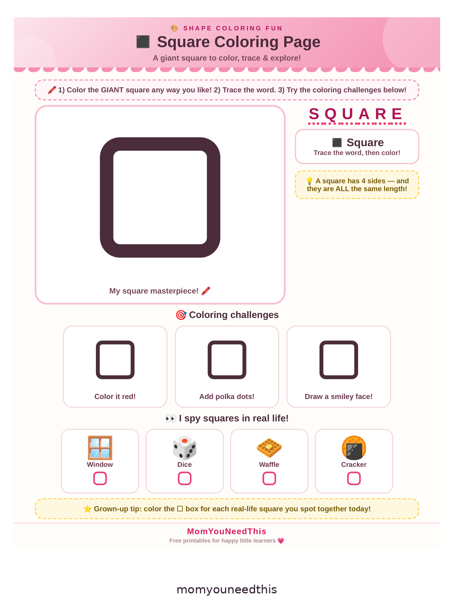
Download Your Free Classic Square
The original classic — a giant square to color, trace, and explore, with coloring challenges and an I-spy square hunt.
⬇️ Download Free Classic Square 🖨️ Print🎁 Free printable for toddlers & preschoolers
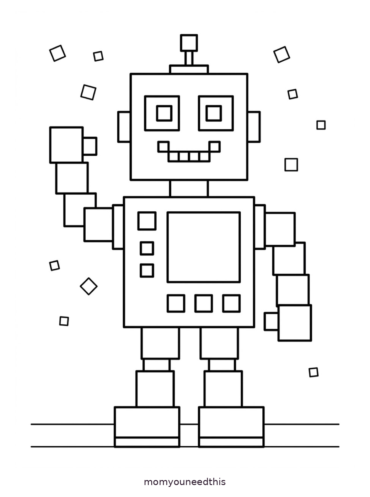
Download Your Free Square Robot
A friendly robot built entirely from squares — square head, square body, and square confetti to color.
⬇️ Download Free Square Robot 🖨️ Print🎁 Free printable for toddlers & preschoolers
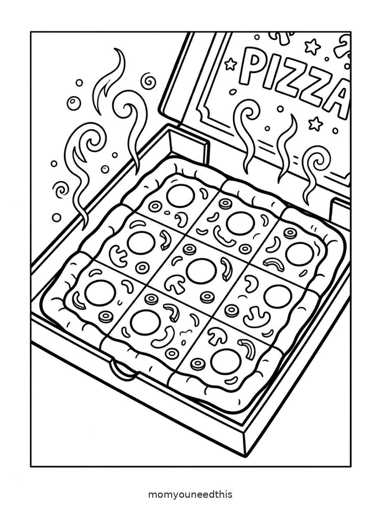
Download Your Free Square Pizza
A square pizza in its box, cut into square slices with pepperoni and mushroom toppings — color it slice by slice.
⬇️ Download Free Square Pizza 🖨️ Print🎁 Free printable for toddlers & preschoolers
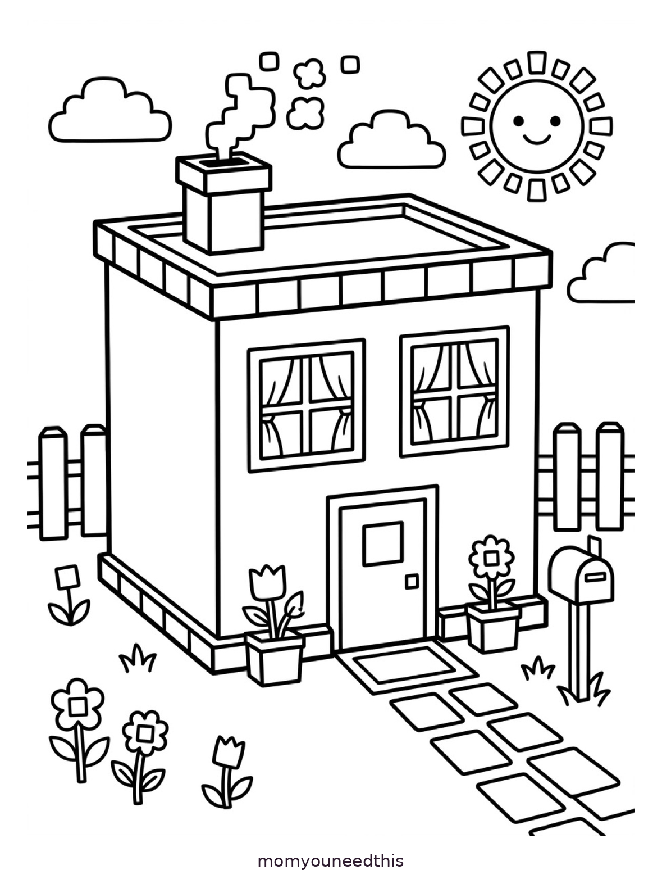
Download Your Free Square House
A whole house made of squares, with square windows, a square door, a chimney, and a picket fence.
⬇️ Download Free Square House 🖨️ Print🎁 Free printable for toddlers & preschoolers
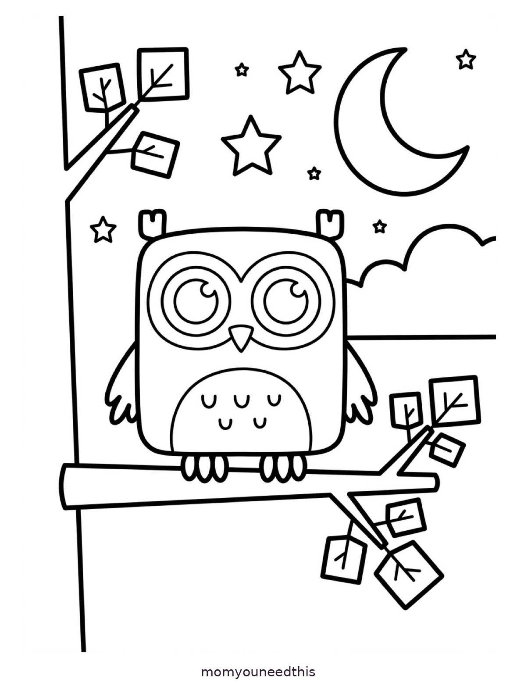
Download Your Free Square Owl
A square-bodied owl sitting on a branch under the moon and stars, with square leaves all around.
⬇️ Download Free Square Owl 🖨️ Print🎁 Free printable for toddlers & preschoolers
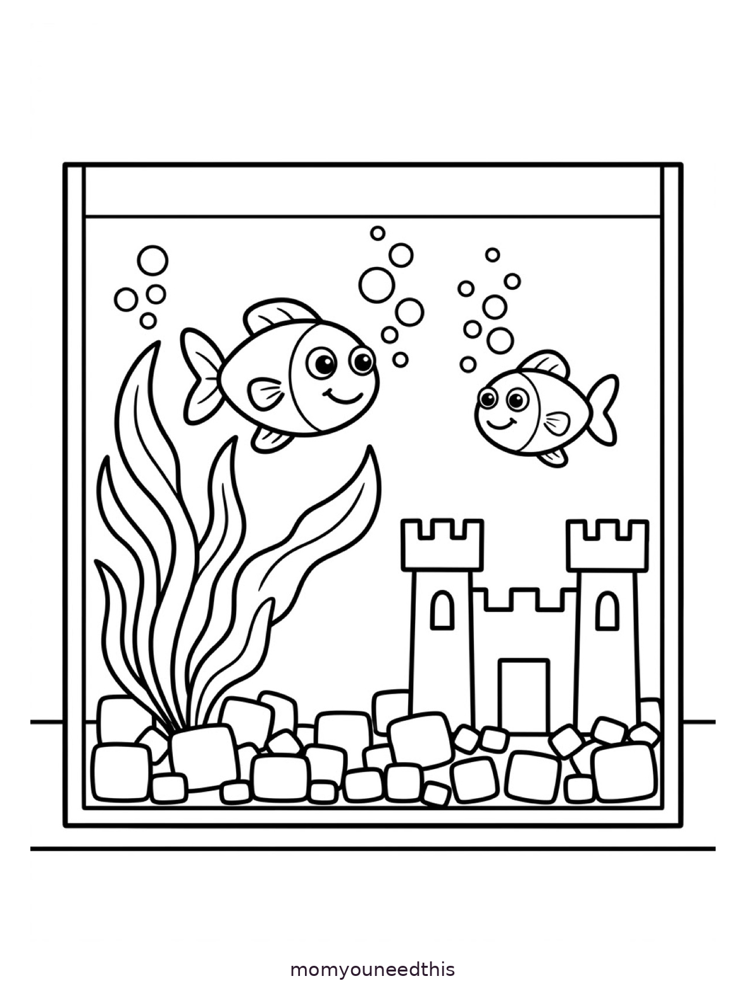
Download Your Free Square Fish Tank
Two happy fish swimming in a square tank, with a little castle and square pebbles at the bottom.
⬇️ Download Free Square Fish Tank 🖨️ Print🎁 Free printable for toddlers & preschoolers
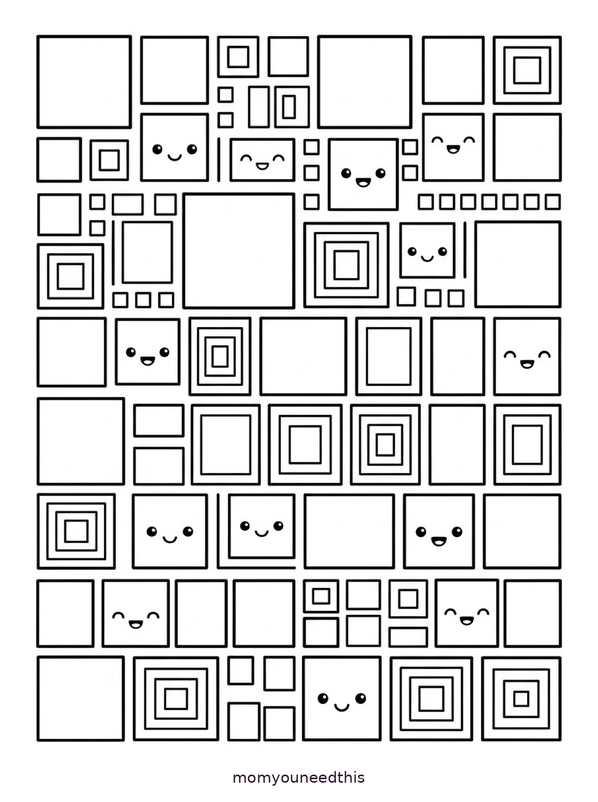
Download Your Free Square Pattern
A page full of squares big and small — plain, patterned, and a few with happy faces — perfect for color practice.
⬇️ Download Free Square Pattern 🖨️ Print🎁 Free printable for toddlers & preschoolers
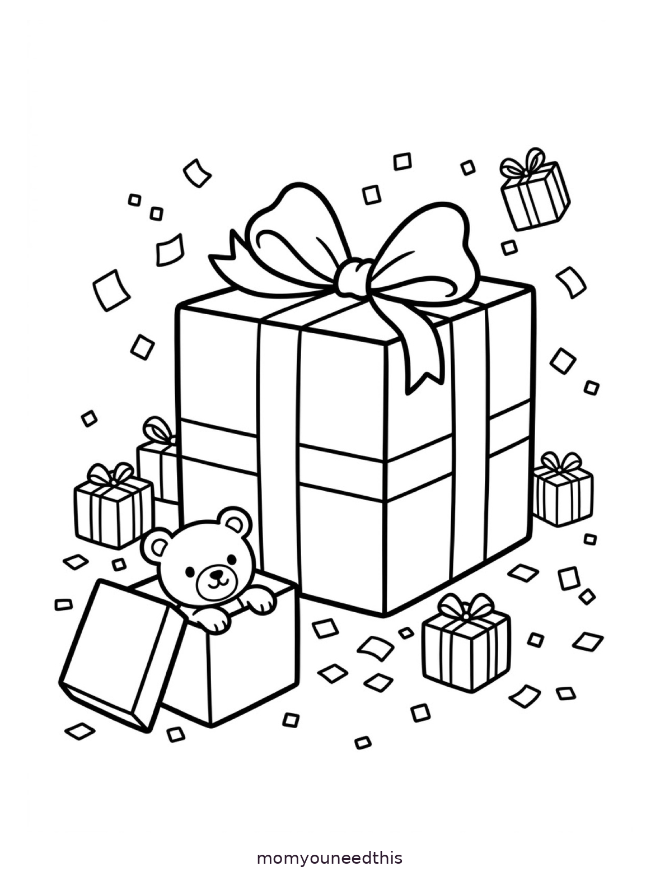
Download Your Free Square Gift
A big square gift box with a bow, smaller square presents, and a teddy bear peeking out of an open box.
⬇️ Download Free Square Gift 🖨️ Print🎁 Free printable for toddlers & preschoolers
🧩 Square Worksheets & Activities
Four worksheets that turn squares into practice — counting, finding, matching, and cutting. Print them on their own or pair them with the coloring pages above.
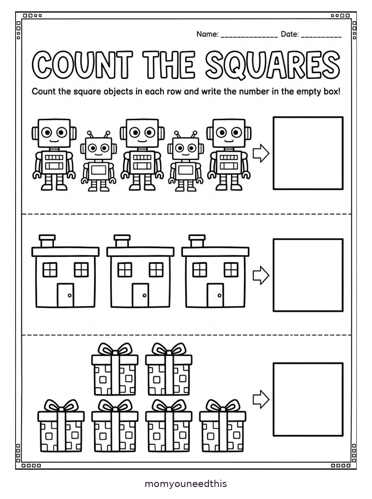
Download Your Free Count the Squares Worksheet
Count the square robots, houses, and gifts in each row and write the number in the empty box.
⬇️ Download Free Count the Squares Worksheet 🖨️ Print🎁 Free printable for toddlers & preschoolers
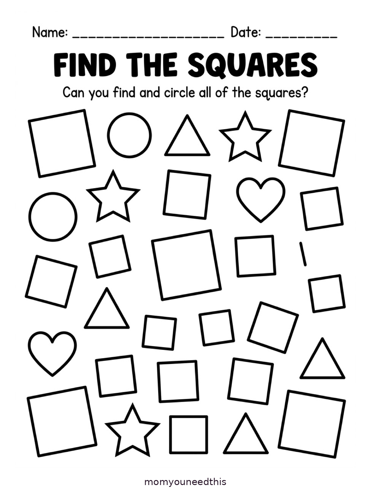
Download Your Free Find the Squares Worksheet
Circles, triangles, stars, and hearts are hiding the squares — find and circle every square.
⬇️ Download Free Find the Squares Worksheet 🖨️ Print🎁 Free printable for toddlers & preschoolers
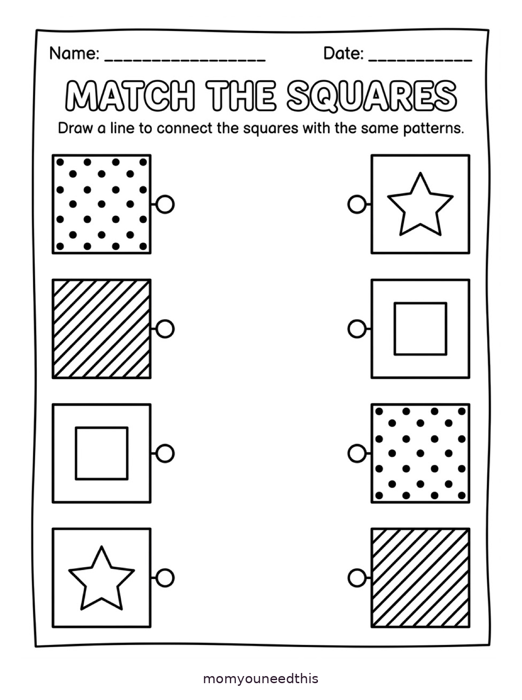
Download Your Free Match the Squares Worksheet
Draw a line to pair each patterned square with the matching square on the other side.
⬇️ Download Free Match the Squares Worksheet 🖨️ Print🎁 Free printable for toddlers & preschoolers
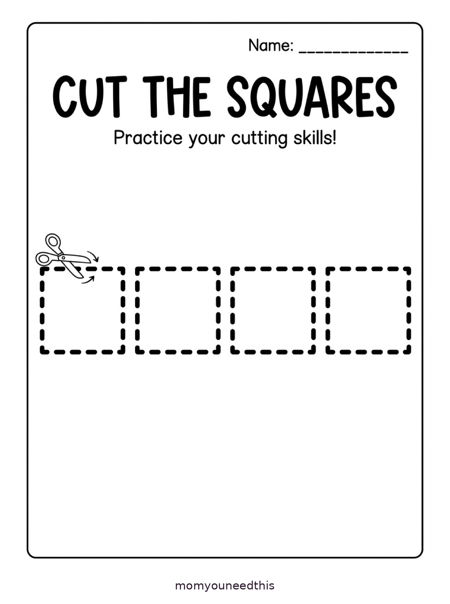
Download Your Free Cut the Squares Worksheet
Scissor practice for little hands: cut along the dashed lines to cut out four big squares.
⬇️ Download Free Cut the Squares Worksheet 🖨️ Print🎁 Free printable for toddlers & preschoolers
◼️ All About the Square
A square has 4 equal sides and 4 corners. Kids can find squares in windows, crackers, sticky notes, napkins, and building blocks. Coloring squares helps children notice straight edges and sharp corners.
🔍 Square Hunt Around Your Home
Time for a square hunt! Find windows, crackers, sticky notes, napkins, and toy blocks. Count the squares you spot and see who finds the most!
💡 Why Color Squares?
Squares teach children about equal sides and right angles — the foundation of early geometry. Tracing and coloring straight edges builds the hand control needed for writing letters like E, F, H, and L.
📚 Keep Exploring Shapes
Discover more free shape activities, printables, and learning ideas created for busy parents.
🎁 Back to Shape Coloring Pages